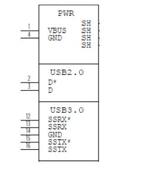
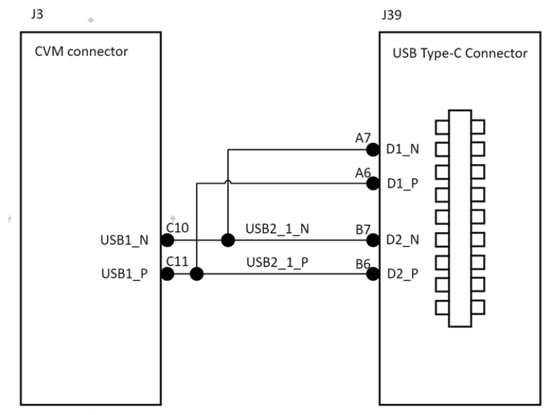
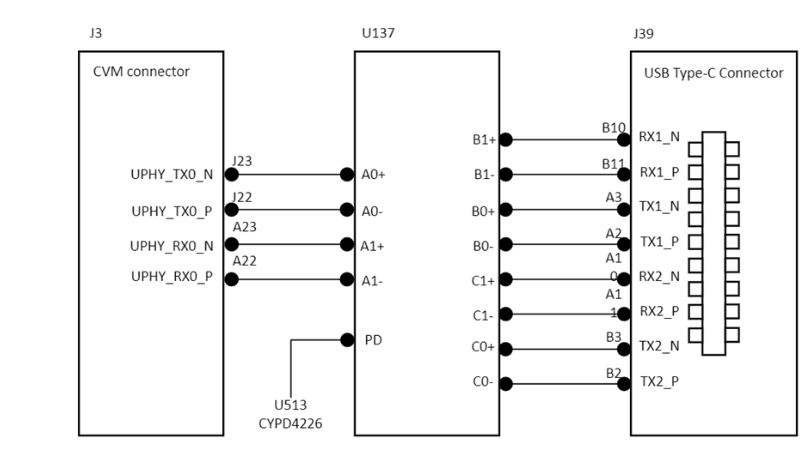
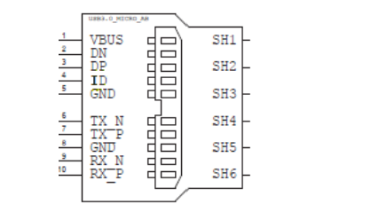
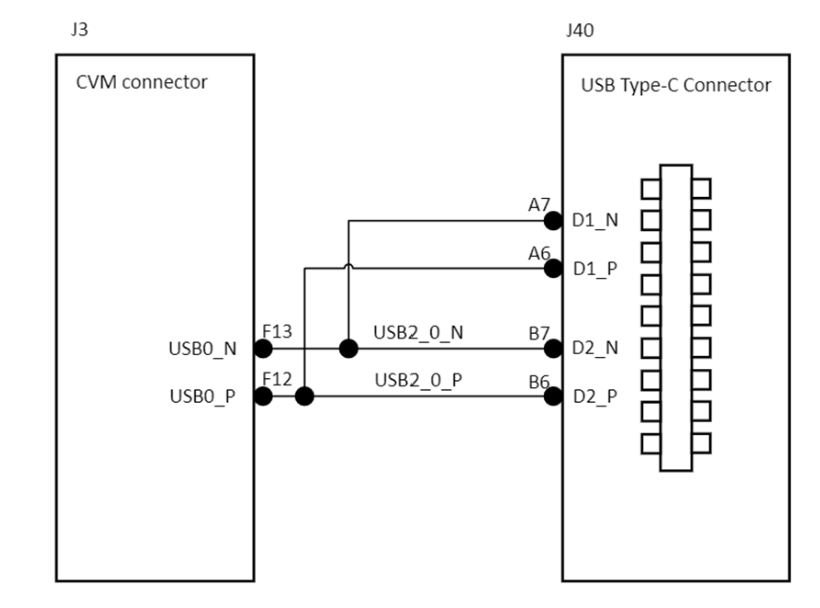
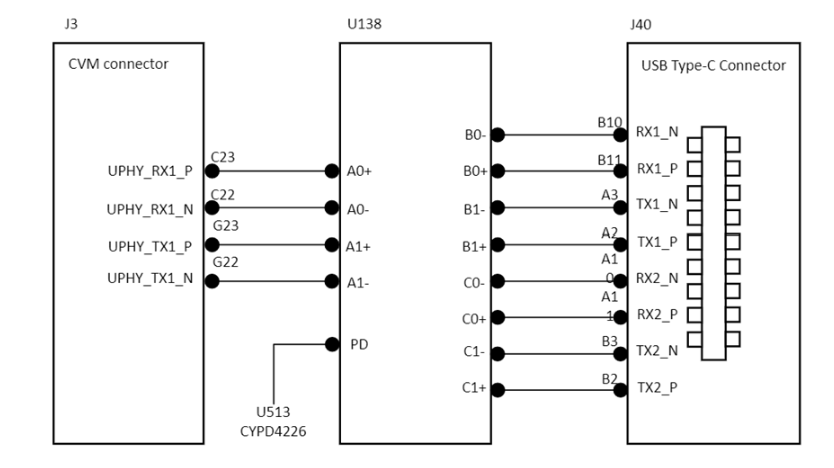
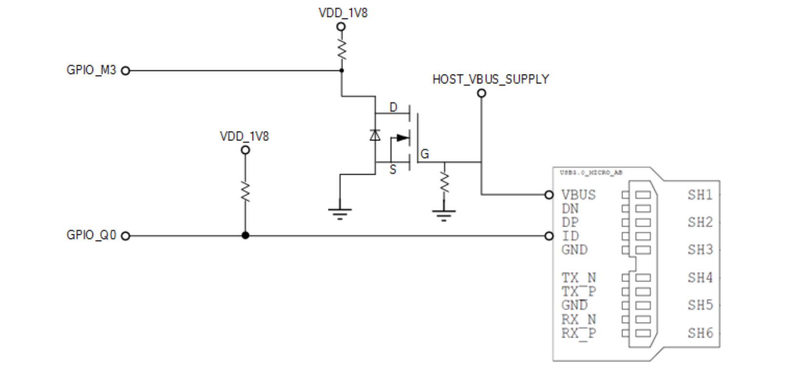

Jetson AGX Orin Platform Adaptation and Bring-Up#
This guide describes how to port the Jetson Linux Driver Package (L4T) from the Jetson AGX Orin Developer Kit to another hardware platform. The examples described include code for the Jetson AGX Orin Developer Kit (P3730). Refer to T234 BCT Deployment Guide for information about customizing the configuration files.
Board Configuration#
The Jetson AGX Orin Developer Kit consists of a P3701 System on Module (SOM) that is connected to a P3737 carrier board. Part number P3730 designates the complete Jetson AGX Orin Developer Kit. The SOM and carrier board each have an EEPROM where the board ID is saved. The SOM can be used without any software configuration modifications.
The SOM that is sold to be incorporated with customer products has a Thermal Transfer Plate (TTP) that is ready to accept a customer-provided thermal solution. The module that is shipped as part of the Developer Kit does not have TTP, but it has a thermal solution that is designed for the Developer Kit. This thermal solution must not be removed from the module.
Before you use the SOM with a carrier board other than P3737, change the kernel device tree, the MB1 configuration, the MB2 Configurations, the ODM data, and the flashing configuration to include configuration for the new carrier board instead of for P3737. The next section provides more information about the changes.
Board Naming#
To support a Jetson AGX Orin module with your carrier board, you must assign the module/carrier board combination with a lowercase alphanumeric name. The name can include hyphens (-) and underscores (_) but not spaces. Some examples of valid names are:
p3730-0000-devkitdevboard
The name you select appears in:
Filenames and pathnames
User-visible device tree filenames
This name is also exposed to the user through various Linux kernel proc files.
Note
In this section, <board> represents your board name.
You must also select a similarly constructed vendor name, and the same character set rules apply. Here is an example:
nvidia
In this section, <vendor> represents your vendor name.
Note
Do not reuse and modify the existing NVIDIA Jetson AGX Orin Developer Kit code without first selecting and using your own board name. If you do not use your own board name, it will not be obvious to Jetson AGX Orin users whether the modified source code supports the original Jetson AGX Orin Developer Kit board or your board.
Placeholders in the Porting Instructions#
Placeholders are used in this topic, and you can substitute an appropriate value for each placeholder when executing commands.
<function>is a functional module name, which might be power-tree, pinmux, sdmmc-drv, keys, comm (Wi-Fi/Bluetooth®), camera, and so on.<board>is a name you have selected to represent your platform.For example, P3730 is the name of the Jetson AGX Orin Developer Kit. NVIDIA <board> names use lower case letters.
<version>is a board version number, such as a00.Files for NVIDIA reference boards include a version number, and files for customer platforms are not required to include a version number.
<vendor>is the name of your organization or the name of the vendor for your board.<root>is the device that holds the root file system for the platform.The supported value is
emmc.
Camera Connector Pin Differences#
The following table provides information about the camera connector pin differences between the Jetson AGX Orin module and the earlier Jetson AGX Xavier modules.
Pin
AGX Xavier
AGX Orin
Notes
1
CSI0
CSI0
Equivalent
2
CSI1
CSI1
Equivalent
3
CSI0
CSI0
Equivalent
4
CSI1
CSI1
Equivalent
5
GND
GND
Equivalent
6
GND
GND
Equivalent
7
CSI0
CSI0
Equivalent
8
CSI1
CSI1
Equivalent
9
CSI0
CSI0
Equivalent
10
CSI1
CSI1
Equivalent
11
GND
GND
Equivalent
12
GND
GND
Equivalent
13
CSI0
CSI0
Equivalent
14
CSI1
CSI1
Equivalent
15
CSI0
CSI0
Equivalent
16
CSI1
CSI1
Equivalent
17
GND
GND
Equivalent
18
GND
GND
Equivalent
19
CSI2
CSI2
Equivalent
20
CSI3
CSI3
Equivalent
21
CSI2
CSI2
Equivalent
22
CSI3
CSI3
Equivalent
23
GND
GND
Equivalent
24
GND
GND
Equivalent
25
CSI2
CSI2
Equivalent
26
CSI3
CSI3
Equivalent
27
CSI2
CSI2
Equivalent
28
CSI3
CSI3
Equivalent
29
GND
GND
Equivalent
30
GND
GND
Equivalent
31
CSI2
CSI2
Equivalent
32
CSI3
CSI3
Equivalent
33
CSI2
CSI2
Equivalent
34
CSI3
CSI3
Equivalent
35
GND
GND
Equivalent
36
GND
GND
Equivalent
37
CSI4
CSI4
Equivalent
38
CSI6
CSI6
Equivalent
39
CSI4
CSI4
Equivalent
40
CSI6
CSI6
Equivalent
41
GND
GND
Equivalent
42
GND
GND
Equivalent
43
CSI4
CSI4
Equivalent
44
CSI6
CSI6
Equivalent
45
CSI4
CSI4
Equivalent
46
CSI6
CSI6
Equivalent
47
GND
GND
Equivalent
48
GND
GND
Equivalent
49
CSI4
CSI4
Equivalent
50
CSI6
CSI6
Equivalent
51
CSI4
CSI4
Equivalent
52
CSI6
CSI6
Equivalent
53
GND
GND
Equivalent
54
GND
GND
Equivalent
55
RSVD
RSVD
Equivalent
56
RSVD
RSVD
Equivalent
57
RSVD
RSVD
Equivalent
58
RSVD
RSVD
Equivalent
59
CSI5
CSI5
Equivalent
60
CSI7
CSI7
Equivalent
61
CSI5
CSI5
Equivalent
62
CSI7
CSI7
Equivalent
63
GND
GND
Equivalent
64
GND
GND
Equivalent
65
CSI5
CSI5
Equivalent
66
CSI7
CSI7
Equivalent
67
CSI5
CSI5
Equivalent
68
CSI7
CSI7
Equivalent
69
GND
GND
Equivalent
70
GND
GND
Equivalent
71
CSI5
CSI5
Equivalent
72
CSI7
CSI7
Equivalent
73
CSI5
CSI5
Equivalent
74
CSI7
CSI7
Equivalent
75
I2C_GP3 (CAM_I2C)
I2C_GP3 (CAM_I2C)
Equivalent
76
NC
CAM_ERROR1
Camera error line
77
I2C_GP3 (CAM_I2C)
I2C_GP3 (CAM_I2C)
Equivalent
78
NC
CAM_ERROR2
Camera error line
79
GND
GND
Equivalent
80
GND
GND
Equivalent
81
2.8V (AVDD_CAM)
2.8V (AVDD_CAM)
Equivalent
82
2.8V (AVDD_CAM)
2.8V (AVDD_CAM)
Equivalent
83
2.8V (AVDD_CAM)
2.8V (AVDD_CAM)
Equivalent
84
NC
CAM_ERROR3
Camera error line
85
NC
CAM_FRSYNC1
Camera Frame Sync
86
NC
CAM_ERROR4
Camera Frame Sync
87
I2C_GP2
I2C_GP2
Equivalent
88
CAM1_MCLK03
CAM1_MCLK03
Equivalent
89
I2C_GP2
I2C_GP2
Equivalent
90
GPIO15_CAM1_PWDN
GPIO15_CAM1_PWDN
Equivalent
91
CAM0_MCLK02
CAM0_MCLK02
Equivalent
92
GPIO16_CAM1_RST
GPIO16_CAM1_RST
Equivalent
93
CAM0_PWDN
CAM0_PWDN
Equivalent
94
CAM2_MCLK04
CAM2_MCLK04
Equivalent
95
CAM0_RST
CAM0_RST
Equivalent
96
NC
CAM_FRSYNC4
Camera Frame Sync
97
NC
CAM_FRSYNC3
Camera Frame Sync
98
NC
CAM_FRSYNC2
Camera Frame Sync
99
GND
GND
Equivalent
100
GND
GND
Equivalent
101
RSVD
CAM_TE_RSV
102
1.8V (VDD_1V8)
1.8V (VDD_1V8)
Equivalent
103
NC
CAM_INT3
Camera Interrupt
104
NC
CAM_INT4
Camera Interrupt
105
I2C_GP4
I2C_GP9
106
NC
CAM_INT2
Camera Interrupt
107
I2C_GP4
I2C_GP9
108
3.3V (VDD_3V3)
3.3V (VDD_3V3)
Equivalent
109
NC
CAM_BACKLIGHT_PWM
- Backlight PWM signal
This is a reserved function that requires rework to enable. By default, this PWM has been routed to the 40-pin connector.
110
3.3V (VDD_3V3)
3.3V (VDD_3V3)
Equivalent
111
NC
CAM_SPI
CAM_SPI is a reserved function that requires rework to enable. This SPI has been routed to the 40-pin connector.
112
NC
CAM_SPI
CAM_SPI is a reserved function that requires rework to enable. This SPI has been routed to the 40-pin connector.
113
NC
CAM_SPI
CAM_SPI is a reserved function that requires rework to enable. This SPI has been routed to the 40-pin connector.
114
NC
CAM_SPI
CAM_SPI is a reserved function that requires rework to enable. This SPI has been routed to the 40-pin connector.
115
GND
GND
Equivalent
116
GND
GND
Equivalent
117
NC
CAM_INT1
Camera Interrupt
118
3.3V (VDD_3V3)
3.3V (VDD_3V3)
Xavier and Orin define this as 3.3V. Older platforms, such as T186, use 5V.
119
GPIO25_VDD_SYS_EN
GPIO12_VDD_SYS_EN
Xavier and Orin have different pin mapping to the CVM.
120
3.3V (VDD_3V3)
3.3V (VDD_3V3)
Xavier and Orin define it as 3.3V. Older platforms, such as T186, use 5V.
Root Filesystem Configuration#
L4T can use any standard or customized Linux root filesystem (rootfs) that is appropriate for their targeted embedded applications.
However, certain settings must be configured in the rootfs’s boot-up framework to set default configuration after the boot or some of the core functionalities will not run as expected.
For example:
The
nv.shandnvfb.shboot-up scripts do some platform-specific configuration in the kernel.The Xorg and X libraries must be correctly configured for the target device.
The nvpmodel clock and frequency must be configured for the target device.
These rootfs configurations and customizations are provided in this driver package in the Linux_for_Tegra/nv_tegra/ directory and its subdirectories:
You must incorporate the relevant customization for your target rootfs from this location.
Note
For the sample Ubuntu root filesystem provided by NVIDIA, this customization is applied using the Linux_for_Tegra/apply_binaries.sh script.
MB1 Configuration Changes#
From version t234 onwards, multiple .dts/dtsi files define boot time configuration of the hardware, these files are applied by Bootloader. The MB1 boot configuration tables are available at <l4t_top>/bootloader/generic/BCT.
For more details about the BCT, refer to T23x Boot Configuration Table for more information about configuring BCT.
Pinmux Changes#
If your board schematic differs from the schematic for the Jetson AGX Orin Developer Kit board, you must change the pinmux configuration applied by the software. To define your board’s pinmux configuration, download the Jetson AGX Orin pinmux table. Ensure that you download the correct version of the table for your SOM.
The table is a spreadsheet and provides the following information:
Shows the locations and default pinmux settings.
Defines the pinmux settings in the source code or device tree
To access the spreadsheet:
Go to the Jetson Download Center.
Search for Orin Series Pinmux and download the associated spreadsheet.
Before you open the spreadsheet, ensure that macros are enabled.
Ensure the Pin Direction column is consistent with the selected peripheral function.
For example, I2C pins (clock and data) are both bidirectional signals. The
Req Initial Stateshould be consistent with the direction. For example, theDrive 1andDrive 0options are applicable only to output and bidirectional modes. The3.3V Toleranceoption is only available for certain pins. Enabling this option will cause that pin to function as open-drain.Customize the spreadsheet for the configuration of your board and click Generate DT File to generate the following files:
pinmux.dtsi
gpio.dtsi
padvoltage.dtsi
Note
Copy the pinmux.dtsi file to the <l4t_top>/bootloader/generic/BCT/ directory, and copy the gpio.dtsi file to the <l4t_top>/bootloader/ directory.
You do not need to copy the padvoltage.dtsi file.
After copying the files, ensure that you point these files to the new board.conf file that you created for your board. Refer to Flashing the Build Image for more information.
Identifying the GPIO Number#
If you designed your own carrier board, to translate from SOM connector pins to actual GPIO numbers, you must understand the following GPIO mapping formula. The translated GPIO numbers can be controlled by the driver.
Because the Jetson module dynamically registers GPIOs, search the kernel messages to check the GPIO allocation ranges for each GPIO group. The command and resulting output are similar to the following:
root@jetson:/home/ubuntu# **dmesg** | **grep gpiochip**
[ 5.726492] gpiochip0: registered GPIOs 348 to 511 on **tegra234-gpio**
[ 5.732478] gpiochip1: registered GPIOs 316 to 347 on **tegra234-gpio-aon**
root@jetson:/home/ubuntu#
As shown in the output above, there are two Jetson GPIO ports with different base indices:
tegra234-gpio, at base index 348
tegra234-gpio-aon, at base index 316
You can check the GPIO number in one of the following ways:
Using a calculation.
Before you get started, you need to know how you plan to configure the offset at each available port.
Here is the list of the tegra234 GPIO ports and offset mapping:
Port
Number of Pins
Port Offset
PORT_A
8
0
PORT_B
1
8
PORT_C
8
9
PORT_D
4
17
PORT_E
8
21
PORT_F
6
29
PORT_G
8
35
PORT_H
8
43
PORT_I
7
51
PORT_J
6
58
PORT_K
8
64
PORT_L
4
72
PORT_M
8
76
PORT_N
8
84
PORT_P
8
92
PORT_Q
8
100
PORT_R
6
108
PORT_X
8
114
PORT_Y
8
122
PORT_Z
8
130
PORT_AC
8
138
PORT_AD
4
146
PORT_AE
2
150
PORT_AF
4
152
PORT_AG
8
156
PORT_AA
8
0
PORT_BB
4
8
PORT_CC
8
12
PORT_DD
3
20
PORT_EE
8
23
PORT_GG
1
31
Search for the pin details from the Orin pinmux table (see Pinmux Changes).
For example SOC_GPIO08, which is GPIO3_PB.00.
Identify the port as B and the Pin_offset as 0.
Calculate the pin number with the following formula:
base + port_offset + pin_offsetVerify the following values:
The base is 348.
This value comes from the kernel boot log, it is already noted tegra234-gpio, at base index 348.
port_offset of port B = 8
This value comes from the tegra234 GPIO port and the offset mapping above.
pin_offset = 0
Pin number = 348 + 8 + 0 = 356
Using Kernel debugfs.
Search for the gpio pin in the Jetson AGX Orin pinmux table (see Pinmux Changes).
For example, SOC_GPIO08, which is GPIO3_PB.00.
Follow the gpio debugfs look up that use the port and offset.
cat /sys/kernel/debug/gpio | grep PB.00The gpio number is mentioned in the first col as gpio-356.
root@jetson:/home/ubuntu# cat /sys/kernel/debug/gpio | grep PB.00gpio-356 (PB.00)
Note
To use a pin as GPIO, ensure that E_IO_HV field is disabled in corresponding pinmux register of the GPIO pin. You can disable the 3.3V Tolerance Enable field in the pinmux spreadsheet.
Also, make sure Pin Direction to Bidirectional so that userspace framework can operate GPIO in both input and output direction. After these configurations, reflash the board with the updated pinmux file.
MB2 Configuration Changes#
This section provides information about the MB2 configuration changes.
Modifying the EEPROM#
EEPROM is an optional component for a customized carrier board. When the carrier board is designed without an EEPROM, in the Linux_for_Tegra/bootloader/tegra234-mb2-bct-common.dtsi (the MB2 BCT file), make the following modification:
- cvb_eeprom_read_size = <0x100> + cvb_eeprom_read_size = <0x0>
Changing the Pinmux#
Starting with JetPack 6, you can change the pinmux in the following ways:
Update the MB1 pinmux BCT.
Refer to the T23x BCT Deployment Guide for more information.
To configure PCIE, CAN, and SPI and generate the correct .dtsi files from the Jetson AGX Orin pinmux spreadsheet, complete the steps in Pinmux Changes.
To dynamically make pinmux changes.
Get the pinmux register address.
Find the below chapter from the TRM: System Components → Multi-Purpose I/O Pins and Pin Multiplexing (PinMux) → Pinmux Registers.
Search for the pin name (for example, SOC_GPIO37).
Write down the complete pin name (for example: PADCTL_G3_SOC_GPIO37_0) and the Offset (for example, SOC_GPIO37: Offset = 0x80).
In the Jetson Orin Technical Reference Manual, in Table 1-15: Pad Control Grouping , find the G3 pad control block = PADCTL_A0 entry.
On the Memory Architecture page, click Memory Mapped I/O → Address Map.
Search for PADCTL_A0.
The base address is PADCTL_A0 = 0x02430000, and the pinmux register address is PADCTL base address + offset.
For example, SOC_GPIO37 Pinmux register address = 0x02430000 + 0x80 = 0x02430080.
Get current register value in device using devmem tool:
Install devmem.
$ sudo apt-get install busybox$ busybox devmem <32-bit address>For example,
devmem 0x02430080.
To use pin as GPIO, update following fields in the PADCTL register:
Find register information from the Pinmux Registers section in TRM as mentioned above.
Set GPIO: Bit 10 = 0.
For the output, set Bit 4 = 0 ; Bit 6 = 0.
For Input, set Bit 4 = 1 ; Bit 6 = 1.
Use the devmem tool to set the register, for example, busybox devmem 0x02430080 w 0x050.
Check and ensure that the register value is set accordingly.
A Complete Example
Note
Currently, to update pinmux, users cannot use the pinctrl APIs. This is because the upstreamed GPIO driver does not yet support calling the pinctrl APIs to make changes in the pinmux registers.
The following example shows you how to update Pin MCLK05: SOC_GPIO33: PQ6:
The Pinmux register base address = 0x2430000
Offset = 0x70
Pinmux register address = 0x2430070
Run the following command.
$ busybox devmem 0x02430070The output value is 0x00000054.
To set the pin as the output, run the following command.
$ busybox devmem 0x02430070 w 0x004Read back to confirm:
$ busybox devmem 0x02430070
Starting with JetPack 6, the GPIO sysfs has been deprecated.
To set the direction of the GPIO controller between the input and the output, users can use upstream GPIO tools instead of GPIO sysfs.
Configuring the pinmux Setting of I2C and DP1_AUX#
Use the following configuration in the device tree to configure pinmux between I2C and DP1_AUX, as they cannot be configured using the pinmux spreadsheet.
miscreg-dpaux@00100000 {
compatible = "nvidia,tegra194-misc-dpaux-padctl";
reg = <0x0 0x00100000 0x0 0xf000>;
dpaux_default: pinmux@0 {
dpaux0_pins {
pins = "dpaux-0";
function = "i2c";
};
};
};
i2c@31b0000 {
pinctrl-names = "default";
pinctrl-0 = <&dpaux_default>;
};
Changing GPIO Pins#
If the pin meets the following conditions, users can dynamically change the pin settings by using the GPIO tools:
The pin is part of the 40-pin header.
To confirm whether the pin is one of the 40-pin headers, users can check the Jetson AGX Orin pinmux spreadsheet.
The pin is not configured as an SFIO pin by the MB1 BCT.
The pin is configured to be bidirectional by the MB1 BCT.
Enabling GPIO as a Wake-Up Source#
If the pin has an ID in the Wake column in the pinmux spreadsheet, a GPIO pin can wake the device from a suspended stage.
After checking the wake ID from spreadsheet, add the pin information to the Linux_for_Tegra/source/kernel/kernel-jammy-src/drivers/soc/tegra/pmc.c file, and to update the kernel, complete the steps in Kernel Customization.
For Orin series, add pin information to
tegra234_wake_events.
Here is an example:
Power Button (POWER_BTN_N) - GPIO3_PEE.04 - wake29
static const struct tegra_wake_event tegra234_wake_events[] = {
TEGRA_WAKE_GPIO("power", 29, 1, TEGRA234_AON_GPIO(EE, 4)),
};
Note
The third parameter of TEGRA_WAKE_GPIO is the instance of the GPIO group.
For a AON GPIO, it must be 1.
For a MAIN GPIO, it must be 0.
Porting the Linux Kernel Device Tree#
Overview of T23x Device Tree Structure#
Refer to Kernel Customization for more information about downloading and building the device tree files.
After you complete the steps from the link above, the device tree files will be in the following location:
Linux_for_Tegra/source/hardware/nvidia/t23x/nv-public
The device tree is structured with the following layers:
The bottom layer comes from the upstream Linux kernel.
This layer keeps the NVIDIA sources aligned with upstream. These files are located in the root of the
nv-publicfolder. For example, seenv-public/tegra234-p3737-0000+p3701-0000.dts.The top layer comes from the nv-platform directory.
The main dts file for each platform is named to coincide with the upstream dts file. However, instead of
<board>.dts, it is<board>-nv.dts. For example, thenv-public/nv-platform/tegra234-p3737-0000+p3701-0000-nv.dtsfile includes the upstream dts file and also adds content and updates.
There are variations of each dtb file for each supported module SKU. The AGX Orin Developer Kit can be used with P3701 modules SKU 0, 4, 5, 8. Correspondingly these are the top-level dtb files:
tegra234-p3737-0000+p3701-0000-nv.dtb
tegra234-p3737-0000+p3701-0004-nv.dtb
tegra234-p3737-0000+p3701-0005-nv.dtb
tegra234-p3737-0000+p3701-0008-nv.dtb
Each of these files has a corresponding dts file in the nv-platform directory.
Updating DTB Files#
After creating or modifying a dtb file, copy the file to the
Linux_for_Tegra/kernel/dtb directory where it will get picked up by
the flash.sh script as determined by the DTB_FILE variable in the
associated flash configuration file.
By default, UEFI is configured for extlinux boot, and it looks for an FDT entry in the /boot/extlinux/extlinux.conf file. If an entry is found, and the file exists, UEFI uses that file from the rootfs when
loading the kernel dtb file. If it is not specified or not found, UEFI falls back to using its own dtb file to load the kernel dtb.
Note
To verify whether your changes have taken effect as expected, use fdtdump.
For example, to help you quickly search the output (vim-style search),
fdtdumpcan be used withless.fdtdump tegra234-p3701-0000+p3737-0005-nv.dtb | less
Device Tree Overlays#
Overlay files that are part of the OVERLAY_DTB_FILE variable in the flash
configuration will be flashed into the UEFI partition (A/B-cpu_bootloader).
These overlays are applied for both UEFI and kernel. Optionally, the extlinux.conf file can be used to specify additional overlay files using the OVERLAYS keyword, but the overlays specified in extlinux.conf are applied only to the kernel dtb.
Porting the Universal Serial Bus#
The Jetson AGX Orin series can support up to four enhanced SuperSpeed Universal Serial Bus (USB) ports. In some implementations, not all of these ports can be used because of UPHY lane sharing among PCIE, UFS, and XUSB. The Jetson P3737 carrier board is designed and verified for three USB ports. If you designed your own carrier board, verify the UPHY lane mapping and compatibility between P3737 and your custom board by consulting the NVIDIA team.
USB Structure#
An enhanced SuperSpeed USB port has nine pins:
VBUS
GND
D+
D−
Two differential signal pairs for SuperSpeed data transfer
One ground (
GND_DRAIN) for drain wire termination and managing EMI, RFI, and signal integrity.
{kind=link}

The D+/D− signal pins connect to UTMI pads. The SSTX/SSRX signal pins connect to UPHY and are handled by one UPHY lane. UPHY lanes are shared between PCIE, UFS, and XUSB, so the lanes must be assigned according to the custom carrier board’s requirements.
USB SerDes Lane Assignment#
The SerDes lanes for USB SuperSpeed are part of the UPHY block. The Jetson P3737 carrier board is designed and verified for three USB3.2 ports (hsio-uphy-config-0). Refer to UPHY Lane Configuration for more information.
Before you design your custom board, refer to the NVIDIA Jetson AGX Orin Series SOC Technical Reference Manual (TRM) the NVIDIA Jetson AGX Orin Series Product Design Guide (DG), and contact NVIDIA.
Required Device Tree Changes#
This section provides guidance to check schematics and configure USB ports in the device tree. All the examples are based on the design of the Jetson AGX Orin P3737 carrier board.
For a Host-Only Port
This section takes J39, a USB 3.2 type-C connector, as an example of a host-only port.
Review the Schematics
Note
The P3737 carrier board’s schematic file, P3737_A04_Concept_schematics.pdf, is included in Jetson AGX Orin Series Developer Kit Carrier Board Design Files (A04), which is available at https://developer.nvidia.com/jetson-agx-orin-developer-kit-carrier-board-design-files-a04.
Check the USB connectors on the P3737 carrier board and find the socket location wired to the P3701 SOM.
USB2.0 signal pins D+/D- (
USB2_1_*) wire out from J39 and lead to C10 (USB1_N) and C11 (USB1_P) on the SOM socket.
USB3.2 differential signal pairs (TX* and RX*) wire out from J39 and lead to J23 (UPHY_TX0_N), J22 (
UPHY_TX0_P), A23 (UPHY_RX0_N), and A22 (UPHY_RX0_P) on the SOM socket through U137 and U513, the USB type-C alt mode switch.
Through the schematic, for J39:
The USB2.0 signal pair is wired to UTMI pad 1 (USB2 port 1).
The USB3.2 signal pairs are wired to UPHY lane 0 (USB3.2 port 0 according to UPHY lane mapping).
{kind=link}
{kind=link}
The xusb_padctl Node
The device tree’s xusb_padctl node follows the conventions of the pinctrl-bindings.txt kernel document. It contains two sets of groups named pads and ports, which describe USB2 and USB3 signals along with parameters and port numbers. The name of each parameter description subnode in pads and ports must be in the form <type>-<port_number>, where <type> is usb2 or usb3 and <port_number> is the associated port number.
The pads Subnode
nvidia,function: A string containing the name of the function to mux to the pin or group. Must be “xusb”.
The ports Subnode
mode: A string that describes USB port capability. A port for USB2 must have this property.It must be one of the following values:
hostperipheralOTG
nvidia,usb2-companion: USB2 port (0/1/2/3) to which the port is mapped.A port for USB3 must have this property.
nvidia,oc-pin: The overcurrent VBUS pin the port is using.The value must be positive or zero.
Note
Overcurrent detection and handling for J39 and J40 on the P3737 carrier board are controlled by U513, a Cypress Type-C controller. Therefore, you need not set this property for J39 and J40 USB ports.
vbus-supply: VBUS regulator for the corresponding UTMI pad.Set to
&vdd_5v0_sysfor a dummy regulator and set dummy regulators for those ports on the P3737 carrier board.Note
The VBUS regulators for J39 and J40 are controlled by U513, a Cypress Type-C controller.
Refer to https://git.kernel.org/pub/scm/linux/kernel/git/torvalds/linux.git/tree/Documentation/devicetree/bindings/phy/nvidia,tegra194-xusb-padctl.yaml for more information about
xusb_padctl.
Take J39 (USB3.2 type-C connector), for example, and create a pad/port node and property list for J39 based on the device tree structure described above:
xusb_padctl: padctl@3520000 {
...
pads {
usb2 {
lanes {
...
usb2-1 {
nvidia,function = "xusb";
status = "okay";
};
...
};
};
usb3 {
lanes {
...
usb3-0 {
nvidia,function = "xusb";
status = "okay";
};
...
};
};
};
ports {
...
usb2-1 {
mode = "host";
vbus-supply = <&vdd_5v0_sys>;
status = "okay";
};
...
usb3-0 {
nvidia,usb2-companion = <1>;
status = "okay";
};
...
};
};
Under the xHCI Node
The Jetson AGX Orin xHCI controller complies to xHCI specifications, which support both USB 2.0 HighSpeed/FullSpeed/LowSpeed and USB 3.2 SuperSpeed protocols.
phys: Must contain an entry for each entry in phy-names.phy-names: Must include an entry for each PHY used by the controller.The names must be of the form <type>-<port_number>, where <type> is
usb2orusb3.nvidia,xusb-padctl: A pointer to thexusb-padctlnode.
Refer to https://git.kernel.org/pub/scm/linux/kernel/git/torvalds/linux.git/tree/Documentation/devicetree/bindings/usb/nvidia,tegra234-xusb.yaml for more information.
Take the J39 USB3.2 type-C connector, for example, and create an xHCI node and property list for J39 based on the device tree structure described above:
usb@3610000 {
...
phys = <&{/bus@0/padctl@3520000/pads/usb2/lanes/usb2-1}>,
<&{/bus@0/padctl@3520000/pads/usb3/lanes/usb3-0}>;
phy-names = "usb2-1", "usb3-0";
nvidia,xusb-padctl = <&xusb_padctl>;
status = "okay";
...
};
For an On-The-GO Port
USB On-The-Go (OTG), often abbreviated USB OTG or just OTG, is a specification that allows USB to act as a host or a device in the same port. A USB OTG port can switch back and forth between the roles of host and device.
This section takes J40 and the USB3.2 type-C connector as an example of an OTG port.
An OTG port adds a fifth pin to the standard USB connector, called the ID pin. An OTG cable has an A-plug on one end and a B-plug on the other end. The A-plug’s ID pin is grounded, while the B-plug’s ID pin is floating. A device with an A-plug inserted becomes an OTG A-device (host), and a device with a B-plug inserted becomes a B-device (device).
{kind=link}

Note
The roles of J40, the port switch, between the host driver (xHCI) and device driver (xUDC) are controlled by a U513 Cypress Type-C controller and ucsi_ccg driver in the Jetson AGX Orin Developer Kit.
Review the Schematics
Note
The P3737 carrier board’s schematic file, P3737_A04_Concept_schematics.pdf, is included in Jetson AGX Orin Series Developer Kit Carrier Board Design Files (A04), which is available at https://developer.nvidia.com/jetson-agx-orin-developer-kit-carrier-board-design-files-a04.
Check the USB connectors on the P3737 carrier board and find the wired socket location to P3701. USB2.0 signal pins D+/D− (USB0_*) wire out from J40 and lead to F12 (USB0_P) and F13 (USB0_N) on the SOM socket.
USB2.0 signal pins D+/D− (USB0_*) wire out from J40 and lead to F12 (USB0_P) and F13 (USB0_N) on the SOM socket.
{kind=link}

USB3.2 differential signal pairs (TX* and RX*) wire out from J40 and lead to G22 (
UPHY_RX1_N), G23 (UPHY_RX1_P), C22 (UPHY_TX1_N), and C23 (UPHY_TX1_P) on the SOM socket through U138 and U513, the USB type-C alt mode switch.
{kind=link}

Through the schematic, for J40:
The USB2.0 signal pair is wired to UTMI pad 0 (USB2 port 0).
USB3.2 signal pairs are wired to UPHY lane 1 (USB3.2 port 1 according to UPHY lane mapping).
The USB Connector Class
A USB connector class represents a physical USB connector. It should be a child of a USB interface controller or a separate node when it is attached to the MUX and USB interface controllers.
Generally, port switching between the roles of an OTG port is controlled by the host driver (xHCI) and device driver (xUDC), and can be defined by the state of the ID pin and the VBUS_DETECT pin.
Taking GPIO_M3 as the VBUS_DETECT pin and GPIO_Q0 as the ID pin, for example:
Find the corresponding GPIO states on the VBUS_DETECT pin and ID pin.
Generally, the ID pin is designed as an internal pull high (logical high). With an A-plug connected the ID pin is pulled to ground (logical low), while with a B-plug connected or no cable connected it remains logical high.
The operation of the
VBUS_DETECTpin depends on the device’s design. Consider the schematic in the following diagram, for example:
With a B-plug connected,
VBUS_DETECTis logical low, because VBUS is provided from an external power supply, and when no cable is connected it is logical high.Note
VBUS_DETECT is initially logical high, and then logical low because VBUS is provided by the host controller. Therefore, the state of the VBUS_DETECT pin does not matter when the OTG port is operating in host mode.
Create the table of GPIO states and their corresponding output cable states:
GPIO_Q0 (ID)
GPIO_M3 (
VBUS_DETECT)Data Role
1
1
Not Connected
0
0
HOST
0
1
HOST
1
0
DEVICE
{kind=link}
Under the Connector Node (Not Used on the P3737 Carrier Board)
Port switching between the roles of an OTG port is defined by the state of the ID pin and the VBUS_DETECT pin and the settings of the external connector class.
compatible: Value must be gpio-usb-b-connector.label: Symbolic name for the connectortype: Size of the connector, should be specified in case of non-full sizeusb-a-connectororusb-b-connectorcompatible connectors.id-gpios: An input gpio for USB ID pin.vbus-gpios: An input gpio for the USB VBus pin, used to detect the presence of VBUS 5V.
Refer to https://git.kernel.org/pub/scm/linux/kernel/git/torvalds/linux.git/tree/Documentation/devicetree/bindings/connector/usb-connector.yaml for more information about USBConnectorClass.
Note
OTG port switching between the host driver (xHCI) and device driver (xUDC) roles are controlled by the Cypress Type-C controller. Therefore, this section is not a part of the device-tree for the Jetson AGX Orin Developer Kit.
Create an
USBConnectorClassdevice node and property list based on the device tree structure described above and the table of GPIO states and corresponding output cable states forGPIO_Q0andGPIO_M3:
xusb_padctl: padctl@3520000 {
...
ports {
usb2-0 {
...
connector {
compatible = "gpio-usb-b-connector";
label = "micro-USB";
type = "micro";
vbus-gpio = <&gpio
TEGRA234_MAIN_GPIO(M, 3) GPIO_ACTIVE_LOW>;
id-gpio = <&gpio
TEGRA234_MAIN_GPIO(Q, 0) GPIO_ACTIVE_HIGH>;
};
...
};
};
...
};
Note
Check the pinmux table for the GPIO that corresponds to the ID pin and VBUS_DETECT pin.
Under the typec Node#
In the Jetson AGX Orin Developer Kit role switching of port J40 between host driver (xHCI) and device driver (xUDC) modes is controlled by default by U513, a Cypress Type-C controller, and the ucsi_ccg driver.
compatible: Value must becypress,cypd4226.firmware-name: The ccg firmware name.reg: The i2c slave address of the typec port controller device.interrupt-parent: The phandle to the interrupt controller which provides the interrupt.interrupts: The interrupt specification for CCGx’s notification.connector: Theusb-c-connectorattached to the CCGx chip, the bindings of the connector node are specified inDocumentation/devicetree/bindings/connector/usb-connector.yaml.
Refer to the driver source code at kernel/3rdparty/canonical/linux-jammy/kernel-source/drivers/usb/typec/ucsi/ucsi_ccg.c for more information about ucsi_ccg.
Taking J40 USB3.2 type-C connector as an example, create a typec node and property list based on the device tree structure described above for J40.
typec@8 {
status = "okay";
compatible = "cypress,cypd4226";
firmware-name = "nvidia,jetson-agx-xavier";
reg = <0x08>;
interrupt-parent = <&gpio>;
interrupts = <TEGRA234_MAIN_GPIO(Y, 4) IRQ_TYPE_LEVEL_LOW>;
ccg_typec_con0: connector@0 {
compatible = "usb-c-connector";
reg = <0>;
label = "USB-C";
data-role = "host";
};
ccg_typec_con1: connector@1 {
compatible = "usb-c-connector";
reg = <1>;
label = "USB-C";
data-role = "dual";
port {
#address-cells = <1>;
#size-cells = <0>;
port@0 {
reg = <0>;
hs_ucsi_ccg_p1: endpoint {
remote-endpoint = <&hs_typec_p1>;
};
};
port@1 {
reg = <1>;
ss_ucsi_ccg_p1: endpoint {
remote-endpoint = <&ss_typec_p1>;
};
};
};
};
};
Under the xusb_padctl Node
xusb_padctl settings for an OTG port are the same as for a host-only port except that the mode should be otg, the usb-role-switch property is added, and the remote endpoint settings are attached to the CCGx chip, and the bindings of connector node are specified in Documentation/devicetree/bindings/connector/usb-connector.yaml file.
Take J40, the USB3.2 type-C connector as an example, and create a pad/port node and property list:
xusb_padctl: padctl@3520000 {
...
pads {
usb2 {
lanes {
usb2-0 {
nvidia,function = "xusb";
status = "okay";
};
...
};
};
usb3 {
lanes {
...
usb3-1 {
nvidia,function = "xusb";
status = "okay";
};
...
};
};
};
ports {
usb2-0 {
mode = "otg";
usb-role-switch;
vbus-supply = <&vdd_5v0_sys>;
status = "okay";
port {
hs_typec_p1: endpoint {
remote-endpoint = <&hs_ucsi_ccg_p1>;
};
};
};
...
usb3-1 {
nvidia,usb2-companion = <0>;
status = "okay";
port {
ss_typec_p1: endpoint {
remote-endpoint = <&ss_ucsi_ccg_p1>;
};
};
};
...
};
};
Under the xHCI Node
The xHCI settings for an OTG port are the same as for a host-only port.
Take J40, the USB3.1 type-C connector as an example, and create an xHCI node and property list based on the device tree structure described in Under the XHCI Node for a host-only port.
usb@3610000 {
...
phys = <&{/bus@0/padctl@3520000/pads/usb2/lanes/usb2-0}>,
<&{/bus@0/padctl@3520000/pads/usb3/lanes/usb3-1}>;
phy-names = "usb2-0", "usb3-1";
nvidia,xusb-padctl = <&xusb_padctl>;
status = "okay";
...
};
Under the xUDC Node
The Jetson AGX Orin xUDC controller supports both USB 2.0 HighSpeed/FullSpeed and USB 3.1 SuperSpeed protocols.
phys: An array; must contain a pointer to the node that defines each PHY in phy-names.phy-names: Must include an entry for each PHY used by the controller.The names must be of the form
<type>-<port_number>, where<type>isusb2orusb3.nvidia,xusb-padctl: Must be a pointer to the xusb-padctl node.Refer to https://git.kernel.org/pub/scm/linux/kernel/git/torvalds/linux.git/tree/Documentation/devicetree/bindings/usb/nvidia,tegra-xudc.yaml for more information about xUCD.
Taking J40, the USB3.1 type-C connector, as an example, create an xUDC node and property list for J40 based on the device tree structure described above.
usb@3550000 {
phys = <&{/bus@0/padctl@3520000/pads/usb2/lanes/usb2-0}>,
<&{/bus@0/padctl@3520000/pads/usb3/lanes/usb3-1}>;
phy-names = "usb2-0", "usb3-1";
nvidia,xusb-padctl = <&xusb_padctl>;
status = "okay";
};
Note
Before designing your custom board, verify the lane mapping by consulting the Jetson AGX Orin OEM Product Design Guide.
Removing Type-C Connectors and UCSI CCG Driver from the Device Tree
In some custom carrier boards, Type-C connectors may not be present. In such cases, adjustments to the device tree are necessary to reflect the absence of these components. The following steps outline the process of removing Type-C connectors and the UCSI CCG driver:
Remove the
ucsi_ccgType-C Controller fromi2c@c240000.If the Cypress CCG Type-C Controller is not required, it should be removed from the corresponding entry in the device tree under
i2c@c240000.Remove the USB Port Endpoint.
The entry for the
usb2-0/portunderpadctl@3520000/portsshould be removed. This is necessary because the associated remote-endpoint is no longer required after the removal of the connector.Add the
role-switch-default-modeproperty for USB Ports (optional).The
role-switch-default-modeproperty is optional and may be used for USB OTG and peripheral ports to explicitly define the default USB role when no Type-C connector is present.
diff --git a/tegra234-p3737-0000+p3701-0000.dts b/tegra234-p3737-0000+p3701-0000.dts
index 90f12277aede..50de3206f4e8 100644
--- a/tegra234-p3737-0000+p3701-0000.dts
+++ b/tegra234-p3737-0000+p3701-0000.dts
@@ -164,23 +164,12 @@
mode = "otg";
usb-role-switch;
status = "okay";
-
- port {
- hs_typec_p1: endpoint {
- remote-endpoint = <&hs_ucsi_ccg_p1>;
- };
- };
+ role-switch-default-mode = "peripheral";
};
usb2-1 {
mode = "host";
status = "okay";
-
- port {
- hs_typec_p0: endpoint {
- remote-endpoint = <&hs_ucsi_ccg_p0>;
- };
- };
};
usb2-2 {
@@ -196,23 +185,11 @@
usb3-0 {
nvidia,usb2-companion = <1>;
status = "okay";
-
- port {
- ss_typec_p0: endpoint {
- remote-endpoint = <&ss_ucsi_ccg_p0>;
- };
- };
};
usb3-1 {
nvidia,usb2-companion = <0>;
status = "okay";
-
- port {
- ss_typec_p1: endpoint {
- remote-endpoint = <&ss_ucsi_ccg_p1>;
- };
- };
};
usb3-2 {
@@ -265,74 +242,6 @@
i2c@c240000 {
status = "okay";
-
- typec@8 {
- compatible = "cypress,cypd4226";
- reg = <0x08>;
- interrupt-parent = <&gpio>;
- interrupts = <TEGRA234_MAIN_GPIO(Y, 4) IRQ_TYPE_LEVEL_LOW>;
- firmware-name = "nvidia,jetson-agx-xavier";
- status = "okay";
-
- #address-cells = <1>;
- #size-cells = <0>;
-
- ccg_typec_con0: connector@0 {
- compatible = "usb-c-connector";
- reg = <0>;
- label = "USB-C";
- data-role = "host";
-
- ports {
- #address-cells = <1>;
- #size-cells = <0>;
-
- port@0 {
- reg = <0>;
-
- hs_ucsi_ccg_p0: endpoint {
- remote-endpoint = <&hs_typec_p0>;
- };
- };
-
- port@1 {
- reg = <1>;
-
- ss_ucsi_ccg_p0: endpoint {
- remote-endpoint = <&ss_typec_p0>;
- };
- };
- };
- };
-
- ccg_typec_con1: connector@1 {
- compatible = "usb-c-connector";
- reg = <1>;
- label = "USB-C";
- data-role = "dual";
-
- ports {
- #address-cells = <1>;
- #size-cells = <0>;
-
- port@0 {
- reg = <0>;
-
- hs_ucsi_ccg_p1: endpoint {
- remote-endpoint = <&hs_typec_p1>;
- };
- };
-
- port@1 {
- reg = <1>;
-
- ss_ucsi_ccg_p1: endpoint {
- remote-endpoint = <&ss_typec_p1>;
- };
- };
- };
- };
- };
};
pcie@14100000 {
PCIe Controller Configuration#
This section provides information about PCIe controller configurations.
PCIe Controller Features#
Orin SoC has 11 PCIe controllers that are supported by the HSIO, NVHS, and MGBE UPHY bricks. These controllers cannot be enabled at the same time. Refer to UPHY Lane Configuration for a list of the supported PCIe configurations.
Here is a list of the PCIe controllers that are supported by Jetson AGX Orin series and their specifications:
PCIe Controller |
Controller mode |
Supported link width |
Supported link speed |
|---|---|---|---|
PCIe C0 |
Root port |
x1 |
Gen4 |
PCIe C1 |
Root port |
x1 |
Gen4 |
PCIe C4 |
Root port |
up to x4 |
Gen4 |
PCIe C5 |
Dual mode |
up to x8 |
Gen4 |
PCIe C7 |
Dual mode |
up to x8 |
Gen4 |
Dual mode PCIe controllers: Controllers C5 and C7 support dual mode, and they can be configured as a Root Port or an Endpoint. Mode selection is fixed during flashing and dynamic switching of the mode during runtime is not possible.
ASPM: All controllers support ASPM L0s, L1, L1.1 and L1.2.
The Jetson AGX Orin Devkit Default PCIe Configuration#
PCIe Controller |
Controller mode |
Supported link width |
PCIe slot |
|---|---|---|---|
PCIe C1 |
Root port |
x1 |
M.2 Key E: Any M.2 Key E form factor cards such as Wi-Fi can be connected. |
PCIe C4 |
Root port |
up to x4 |
M.2 Key M: Any M.2 Key M form factor NVMe cards can be connected. |
PCIe C5 |
Root port or Endpoint |
up to x8 |
PCIe slot: Any PCIe CEM endpoint can be connected. The PCIe slot is a x16 slot, but electrically it operates in x8 mode. |
Enable PCIe in a Customer CVB Design#
Select the appropriate UPHY configuration from UPHY Lane Configuration, which suits the CVB design and update ODMDATA accordingly.
Refer to Setting Optional Environmental Variables for more information about how to update ODMDATA..
Configure the PCIe reset (PEX_L*_RST_N) and clkreq(PEX_L*_CLKREQ_N) as follows. To update the pinmux value, refer to Changing the Pinmux.
** Pinmux settings for Root Port mode **
Pinmux
Customer Usage
Pin Direction
3.3V Tolerance Enable
PEX_L*_RST_N
SFIO(PE*_RST_L)
Output
Enable
PEX_L*_CLKREQ_N
SFIO(PE*_CLKREQ_L)
Bidirectional
Enable
** Pinmux settings for Endpoint mode **
Pinmux
Customer Usage
Pin Direction
3.3V Tolerance Enable
PEX_L*_RST_N
GPIO(rsvd1)
Input
Enable
PEX_L*_CLKREQ_N
SFIO(PE*_CLKREQ_L)
Bidirectional
Enable
Enable the appropriate PCIe node listed under topic “Here are the PCIe controller DT nodes:”:
Add the
pipe2uphy phandleentries as aphyproperty in the PCIe controller DT node.pipe2uphyDT nodes are defined in SoC DT in the <TOP>/hardware/nvidia/t23x/nv-public/tegra234.dtsi file.Each
pipe2uphynode is a 1:1 map to the UPHY lanes that are defined in UPHY Lane Configuration.If the Tegra PCIe is operated in the endpoint mode, add the “reset-gpios” property with the gpio phandle, the gpio number connected to PERST# and flags(GPIO_ACTIVE_LOW).
If there are platform-specific regulators used to power up endpoints, the regulators can be registered as vpcie3v3-supply and/or vpcie12v-supply in PCIe controller device tree node. The Tegra PCIe controller driver enable the regulators before the PCIe LTSSM sequence starts.
For information about Jetson AGX Orin PCIe controller device tree configurations, see the documentation file at:
The
$(KERNEL_TOP)/Documentation/devicetree/bindings/pci/nvidia,tegra194-pcie.txtfile covers topics that include configuring maximum link speed, link width, advertisement of different ASPM states, and so on.
Here are the PCIe controller DT nodes:
PCIe Controller and Mode |
PCIe Controller DT Node |
|---|---|
PCIe C0 RP |
|
PCIe C1 RP |
|
PCIe C2 RP |
|
PCIe C3 RP |
|
PCIe C4 RP |
|
PCIe C5 RP |
|
PCIe C6 RP |
|
PCIe C7 RP |
|
PCIe C8 RP |
|
PCIe C9 RP |
|
PCIe C10 RP |
|
PCIe C5 EP |
|
PCIe C6 EP |
|
PCIe C7 EP |
|
PCIe C10 EP |
Example change: PCIe x1 (C0) and PCIe x8 (C7) in Root Port mode
diff --git a/tegra234-p3737-0000+p3701-0000.dts b/tegra234-p3737-0000+p3701-0000.dts
index 575970d..13d9c3a 100644
--- a/tegra234-p3737-0000+p3701-0000.dts
+++ b/tegra234-p3737-0000+p3701-0000.dts
@@ -302,6 +302,22 @@
phy-names = "p2u-0", "p2u-1", "p2u-2", "p2u-3", "p2u-4",
"p2u-5", "p2u-6", "p2u-7";
};
+
+ pcie@14180000 {
+ status = "okay";
+ phys = <&p2u_hsio_0>;
+ phy-names = "p2u-0";
+ };
+
+ pcie@141e0000 {
+ status = "okay";
+ num-lanes = <8>;
+ phys = <&p2u_gbe_0>, <&p2u_gbe_1>, <&p2u_gbe_2>,
+ <&p2u_gbe_3>, <&p2u_gbe_4>, <&p2u_gbe_5>,
+ <&p2u_gbe_6>, <&p2u_gbe_7>;
+ phy-names = "p2u-0", "p2u-1", "p2u-2", "p2u-3",
+ "p2u-4", "p2u-5", "p2u-6", "p2u-7";
+ };
};
gpio-keys {
Below is the change to configure clkreq and reset pins in mb1 bct.
--- a//tegra234-mb1-bct-pinmux-p3701-0000-a04.dtsi
+++ b//tegra234-mb1-bct-pinmux-p3701-0000-a04.dtsi
@@ -1486,9 +1486,9 @@
pex_l0_clkreq_n_pk0 {
nvidia,pins = "pex_l0_clkreq_n_pk0";
- nvidia,function = "rsvd1";
+ nvidia,function = "pe0";
nvidia,pull = <TEGRA_PIN_PULL_NONE>;
- nvidia,tristate = <TEGRA_PIN_ENABLE>;
+ nvidia,tristate = <TEGRA_PIN_DISABLE>;
nvidia,enable-input = <TEGRA_PIN_ENABLE>;
nvidia,io-high-voltage = <TEGRA_PIN_ENABLE>;
nvidia,lpdr = <TEGRA_PIN_DISABLE>;
@@ -1496,10 +1496,10 @@
pex_l0_rst_n_pk1 {
nvidia,pins = "pex_l0_rst_n_pk1";
- nvidia,function = "rsvd1";
+ nvidia,function = "pe0";
nvidia,pull = <TEGRA_PIN_PULL_NONE>;
- nvidia,tristate = <TEGRA_PIN_ENABLE>;
- nvidia,enable-input = <TEGRA_PIN_ENABLE>;
+ nvidia,tristate = <TEGRA_PIN_DISABLE>;
+ nvidia,enable-input = <TEGRA_PIN_DISABLE>;
nvidia,io-high-voltage = <TEGRA_PIN_ENABLE>;
nvidia,lpdr = <TEGRA_PIN_DISABLE>;
};
@@ -1566,9 +1566,9 @@
pex_l7_clkreq_n_pag0 {
nvidia,pins = "pex_l7_clkreq_n_pag0";
- nvidia,function = "rsvd1";
+ nvidia,function = "pe7";
nvidia,pull = <TEGRA_PIN_PULL_NONE>;
- nvidia,tristate = <TEGRA_PIN_ENABLE>;
+ nvidia,tristate = <TEGRA_PIN_DISABLE>;
nvidia,enable-input = <TEGRA_PIN_ENABLE>;
nvidia,io-high-voltage = <TEGRA_PIN_ENABLE>;
nvidia,lpdr = <TEGRA_PIN_DISABLE>;
@@ -1576,10 +1576,10 @@
pex_l7_rst_n_pag1 {
nvidia,pins = "pex_l7_rst_n_pag1";
- nvidia,function = "rsvd1";
+ nvidia,function = "pe7";
nvidia,pull = <TEGRA_PIN_PULL_NONE>;
- nvidia,tristate = <TEGRA_PIN_ENABLE>;
- nvidia,enable-input = <TEGRA_PIN_ENABLE>;
+ nvidia,tristate = <TEGRA_PIN_DISABLE>;
+ nvidia,enable-input = <TEGRA_PIN_DISABLE>;
nvidia,io-high-voltage = <TEGRA_PIN_ENABLE>;
nvidia,lpdr = <TEGRA_PIN_DISABLE>;
};
diff --git a/tegra234-mb1-bct-gpio-p3701-0000-a04.dtsi b/tegra234-mb1-bct-gpio-p3701-0000-a04.dtsi
index 86f4bc2..32fdd2e 100644
--- a/bootloader/tegra234-mb1-bct-gpio-p3701-0000-a04.dtsi
+++ b/bootloader/tegra234-mb1-bct-gpio-p3701-0000-a04.dtsi
@@ -60,8 +60,6 @@
TEGRA234_MAIN_GPIO(K, 7)
TEGRA234_MAIN_GPIO(L, 2)
TEGRA234_MAIN_GPIO(L, 3)
- TEGRA234_MAIN_GPIO(AG, 0)
- TEGRA234_MAIN_GPIO(AG, 1)
TEGRA234_MAIN_GPIO(AG, 2)
TEGRA234_MAIN_GPIO(AG, 3)
TEGRA234_MAIN_GPIO(AG, 6)
--
2.17.1
Debug PCIe Link-Up Failure#
After you make the required device tree changes, as mentioned in Enable PCIe in a customer CVB design, if the PCIe link fails to come up, complete the following debug steps to triage the issue:
Add this patch to the pcie kernel driver and complete the following debug steps.
diff --git a/drivers/pci/controller/dwc/pcie-tegra194.c b/drivers/pci/controller/dwc/pcie-tegra194.c
index a44b477cee27..937d7019fbb1 100644
--- a/drivers/pci/controller/dwc/pcie-tegra194.c
+++ b/drivers/pci/controller/dwc/pcie-tegra194.c
@@ -2193,10 +2193,12 @@ static int tegra_pcie_config_rp(struct tegra_pcie_dw *pcie)
pcie->link_state = tegra_pcie_dw_link_up(&pcie->pci);
if (!pcie->link_state) {
- ret = -ENOMEDIUM;
- goto fail_host_init;
+ dev_err(dev, "Disabling PCIe power down\n");
+ ret = 0;
}
+ pcie->link_state = true;
+
name = devm_kasprintf(dev, GFP_KERNEL, "%pOFP", dev->of_node);
if (!name) {
ret = -ENOMEM;
After you add this patch, lspci should list the Root Port device as follows:
$ lspci
00:01.0 PCI bridge: NVIDIA Corporation Device 10e5 (rev a1)
Triaging from platform side:
Make sure that signal routing is there from Root port to Endpoint that include:
PERST# routing: Make sure it goes high when Root port attempts the link up.
CLKREQ# routing: By default ASPM is disabled, so this will not have any role in link up failure. If you enabled ASPM L1-CPM or L1SS by completing the steps in Enabling the PCIe ASPM, verify whether this pulled low when Root port attempts the link up.
REFCLK routing: Make sure that REFCLK flows from Root port to Endpoint. Connect the scope and observe spread enabled 100 MHz clock.
Tx and Rx routing: Verify Tx and Rx lanes routing are fine.
If any of the signals above go through board level muxes, make sure those muxes are configured correctly.
PCIe slot regulators or GPIOs: If PCIe slot regulators are present, make sure they are powered up. If endpoint excepts some GPIO signals to be toggled as part of power up sequence, make sure that it is happening, Example: Some Wi-Fi cards expects WDISABLE_1 signal to be asserted before PCIe link up.
Triaging from Software side:
Verify
DLActivestatus in Root portLnkStaoflspci -vvvoutput. This is to check whether the link comes up by the time kernel boots to shell (for example, to confirm whether the link is taking more time to come up).Dump PADCTL_PEX_CTL_PEX_L*_CLKREQ_N_0 and PADCTL_PEX_CTL_PEX_L*_RST_N_0 pinmux values and check if settings are correct.
Dump PCIE_RP_APPL_DEBUG_0 register, refer to TRM for register address of each controller. Accessing the controller’s address, which is not enabled, will cause a CBB power down error. When you share this information in NVIDIA developer forum, it will help us determine the LTSSM state.
Reduce the link speed to Gen-1 and link width to x1 using device tree properties.
Enabling the PCIe ASPM#
If the card supports L1-CPM or L1SS add “supports-clkreq” in the respective controller device tree node.
Enabling this property for an endpoint that does not support L1-CPM or L1SS will cause a PCIe link-up failure.
To enable desired ASPM state, clear the respective bit in the nvidia,disable-aspm-states property .
“nvidia,disable-aspm-states” value
ASPM status
0xf
All states disabled
0xe
ASPM L0s enabled, L1, L1.1 & L1.2 disabled
0xd
ASPM L1 enabled, L0s, L1.1 & L1.2 disabled
0xC
ASPM L0s & L1 enabled, L1.1 & L1.2 disabled
0x8
ASPM L0s, L1 & L1.1 enabled, L1.2 disabled
0x1
ASPM L1, L1.1 & L1.2 enabled, L0s disabled
0x0
All ASPM states enabled
Confirm the status of the different ASPM states from the “lspci -vvv” output and aspm_state_count in the PCIe RP controller’s debugfs.
Enabling more SPI interrupts for PCIe#
For some use cases that require to get more MSI interrupts, modify the following code and rebuild the kernel image:
diff --git a/kernel-include/dt-bindings/interrupt-controller/tegra-t23x-agic.h b/kernel-include/dt-bindings/interrupt-controller/tegra-t23x-agic.h
index 03ff266..883126c 100644
--- a/kernel-include/dt-bindings/interrupt-controller/tegra-t23x-agic.h
+++ b/kernel-include/dt-bindings/interrupt-controller/tegra-t23x-agic.h
@@ -168,6 +168,6 @@
/* SPIs which are available for PCIe MSI interrupts */
#define GIC_SPI_MSI_BASE 608
-#define GIC_SPI_MSI_SIZE 70
+#define GIC_SPI_MSI_SIZE 352
#endif /* _DT_BINDINGS_INTERRUPT_CONTROLLER_TEGRA_T23X_AGIC_H */
Enabling SRNS for PCIe Endpoint#
Jetson Orin supports Separate Reference Clock with no Spread Spectrum (SRNS) for PCIe RP and EP.
Note
SRNS is supported only for PCIe controllers C5-C10. The spread for controllers C0-C4, which is part of HSIO UPHY brick, cannot be disabled.
To enable SRNS, you must configure the following software:
Add the
nvidia,enable-srnsdevice tree property to the RP and EP kernel dts file in the corresponding PCIe controller.Remove the
nvidia,enable-ext-refclkdevice tree property from the EP kernel dts file in the corresponding PCIe controller.If the EP side is also a Jetson Orin product, add the following property to the
uphynode in the BPMP dtb file on EP. To modify BPMP dtb, use the Device Tree Compiler (dtc) to convert it back from binary to source code.For PCIe C5, add the
pcie-c5-endpoint-use-int-refclk;property.For PCIe C7, add the
pcie-c7-endpoint-use-int-refclk;property.
Here is an example:
uphy { status = "okay"; hsio-uphy-config = <0x00>; hsstp-lane-map = <0x03>; nvhs-uphy-config = <0x00>; gbe-uphy-config = <0x16>; gbe0-enable-10g; + pcie-c5-endpoint-use-int-refclk; };Disable Spread Spectrum Clocking (SSC).
To disable the spread on C5 and C6, add the following
clock@pllnvhspatch to BPMP dtb.To disable spread on C7, C8, C9 and C10, add the following
clock@pllgbepatch to BPMP dtb.
/ {
+ clocks {
+ clock@pllnvhs {
+ clk-id = <0xf3>;
+ disable-spread = <1>;
+ };
+
+ clock@pllgbe {
+ clk-id = <0x13f>;
+ disable-spread = <1>;
+ };
+ };
Note
SRNS (Separate Reference No Spread) disables SSC (Spread Spectrum Clocking). The deactivation of PCIe SSC significantly increases the challenge of passing EMC tests.
Ethernet Controller Configuration#
The Jetson AGX Orin series can support up to one MGBE(XFI) and one RGMII at same time. In some implementations, not all of these ports can be used because of UPHY lane sharing among PCIE, MGBE, and XUSB. The Jetson P3737 carrier board is designed and verified for one MGBE port. If you designed your own carrier board and wanted to enable RGMII, device tree configuration is required.
For PHY#
Prerequisites
For 10 G PHYs make sure the PHY firmware is flashed in XFI 10G mode so that we can have 10G/5G/2.5G/1G/100M connections at PHY line side.
Make sure that the PHY comes out of reset and is in a ready state (read the PHY ID by using mdio tool to ensure that the PHY firmware is successfully loaded) when the PHY reset GPIO is toggled.
Make sure the PHY driver is available.
Here are the DT entries that are necessary to connect the 10G MAC with the third-party Ethernet PHY:
/*0:XFI 10G, 1:XFI 5G, 2: USXGMII 10G, 3: USXGMII 5G */
nvidia,phy-iface-mode = <0>;
nvidia,phy-reset-gpio - <&tegra_main_gpio TEGRA234_MAIN_GPIO(Y,1) 0>;
mdio {
compatible = "nvidia,eqos-mdio";
#address-cells = <1>;
#size-cells = <0>;
mgbe0_agr113c_phy: ethernet_phy@0 {
compatible = "ethernet-phy-ieee8022.3-c45";
reg = <0x0>;
nvidia,phy-rst-pdelay-msec = <150.; /* msec */
nvidia,phy-rst-duration-usec = <221000>; /* usec */
};
};
nvidia,phy-iface-mode: 0 for XFI 10G mode, 1 for XFI 5G, 2 for USXGMII, 3 for USXGMII 5G.Default configuration is XFI 10G mode.
Add
nvidia,uphy-gbe-mode= 1 or 0 (1 : 10G, 0 : 5G) based on the phy-iface-mode selection.Default configuration is 10G.
reg: Make sure this needs to be the MDIO address. Default MDIO address is 0.nvidia,phy-rst-pdelay-msec: Post delay value once after bringing PHY out of reset in milliseconds.nvidia,phy-rst-duration-usec: Delay between the PHY reset GPIO toggle in microseconds.
For Switch#
Prerequisites
Ensure that the Switch port is configured for XFI 5G or XFI 10G.
Ensure that before Orin boots up, the Switch is powered on an dthat the port is configured.
/* 1:10G, 0:5G */ nvidia,uphy-gbe-mode = <1>; /* 0:XFI 10G, 1:XFI 5G, 2:USXGMII 10G, 3:USXGMII 5G */ nvidia,phy-iface-mode = <0> nvidia,max-platform-mtu = <16383>; fixed-link { speed = <10000>; full-duplex; };
Here are the DT entries that are necessary to connect the 10G MAC with the third-party Ethernet switch:
nvidia,uphy-gbe-mode: 1/0 based on the switch port configurationnvidia,phy-iface-mode: 0/1 based on the switch port configuration.Add the fixed-link node with speed 10G/5G based on the switch port configuration.
For RGMII#
Prerequisites
Ensure that PHY comes out of reset mode and is in a ready state when the PHY reset GPIO is toggled.
The read PHY ID should use the mdio tool to ensure that PHY is out of the reset mode.
Ensure that the PHY driver is available.
Ensure that the PIN mux settings are correct in the RGMII interface.
Ensure that PHY comes out of reset and supplies the Rx clock to EQOS.
Here are the DT entries that are necessary to connect the 1G MAC to the third-party ethernet PHY:pinmux:
phy-mode = "rgmii-id";
phy-handle = <$phy>;
nvidia,phy-reset-gpio = <$tegra_main_gpio TEGRA234_MAIN_GPIO(G, 5) 0>
mdio {
compatible = "nvidia,eqos-mdio";
#address-cells = <1>;
#size-cells = <0>;
phy: phy@1 {
reg = <1>;
nvidia,phy-rst-pdelay-msec = <224>; /* msec */
nvidia,phy-rst-duration-usec = <10000>; /* usec */
interrupt-parent = <$tegra_main_gpio>;
interrupts = <TEGRA234_MAIN_GPIO(G, 4) IRQ_TYPE_LEVEL_LOW>;
};
};
Here is some additional information about the DT entries:
Ensure that the reg variable is set with the MDIO address.
The default MDIO address is 1.
phy-mode: phy mode (for example, rgmii-id).interrupts: PHY interrupt.nvidia,phy-reset-gpio: PHY reset GPIOnvidia,phy-rst-pdelay-msec: Post delay value after bringing PHY out of reset in milliseconds.nvidia,phy-rst-duration-usec: Delay between the PHY reset GPIO toggle in microseconds.Pinmux setting changes:
Here are the pinmux changes that need to be taken care to configure RGMII.
- Tx
eqos_txc_pe0, eqos_td0_pe1, eqos_td1_pe2, eqos_td2_pe3, eqos_td3_pe4, eqos_tx_ctl_pe5eqos_td0_pe1 { nvidia,pins = "eqos_td0_pe1"; nvidia,function = "eqos"; nvidia,pull = <TEGRA_PIN_PULL_NONE>; nvidia,tristate = <TEGRA_PIN_DISABLE>; nvidia,enable-input = <TEGRA_PIN_DISABLE>; };
- Rx
eqos_rd0_pe6, eqos_rd1_pe7, eqos_rd2_pf0, eqos_rd3_pf1, eqos_rx_ctl_pf2, eqos_rxc_pf3eqos_rd0_pe6 { nvidia,pins = "eqos_rd0_pe6"; nvidia,function = "eqos"; nvidia,pull = <TEGRA_PIN_PULL_UP>; nvidia,tristate = <TEGRA_PIN_ENABLE>; nvidia,enable-input = <TEGRA_PIN_ENABLE>; };
- MDC/MDIO
eqos_sma_mdio_pf4, eqos_sma_mdc_pf5eqos_sma_mdio_pf4 { nvidia,pins = "eqos_sma_mdio_pf4"; nvidia,function = "eqos"; nvidia,pull = <TEGRA_PIN_PULL_NONE>; nvidia,tristate = <TEGRA_PIN_DISABLE>; nvidia,enable-input = <TEGRA_PIN_ENABLE>; }; eqos_sma_mdc_pf5 { nvidia,pins = "eqos_sma_mdc_pf5"; nvidia,function = "eqos"; nvidia,pull = <TEGRA_PIN_PULL_NONE>; nvidia,tristate = <TEGRA_PIN_DISABLE>; nvidia,enable-input = <TEGRA_PIN_DISABLE>; };
Reset, Interrupt Pinmux settings.
soc_gpio17_pg4 { nvidia,pins = "soc_gpio17_pg4"; nvidia,function = "rsvd0"; nvidia,pull = <TEGRA_PIN_PULL_UP>; nvidia,tristate = <TEGRA_PIN_ENABLE>; nvidia,enable-input = <TEGRA_PIN_ENABLE>; nvidia,lpdr = <TEGRA_PIN_DISABLE>; }; soc_gpio18_pg5 { nvidia,pins = "soc_gpio18_pg5"; nvidia,function = "rsvd0"; nvidia,pull = <TEGRA_PIN_PULL_NONE>; nvidia,tristate = <TEGRA_PIN_DISABLE>; nvidia,enable-input = <TEGRA_PIN_DISABLE>; nvidia,lpdr = <TEGRA_PIN_DISABLE>; };
UPHY Lane Configuration#
Universal Physical layer (UPHY) is a physical I/O interface layer that can serve multiple types of interfaces, for example, USB and PCIe. A UPHY lane can support multiple interface types.
There are 3 UPHY instances:
HSIO (UPHY0)
NVHS (UPHY1)
GBE (UPHY2)
For each UPHY instance, select one of the given options:
UPHY0 (HSIO) Configuration Options
Lane
hsio-uphy-config-0
hsio-uphy-config-16
0
USB 3.2 (P0)
PCIe x1 (C0), RP
1
USB 3.2 (P1)
USB 3.2 (P1)
2
USB 3.2 (P2)
USB 3.2 (P2)
3
PCIe x1 (C1), RP
PCIe x1 (C1), RP
4
PCIe x4 (C4), RP
PCIe x4 (C4), RP
5
6
7
UPHY1 (NVHS) Configuration Options
Lane
nvhs-uphy-config-0
nvhs-uphy-config-1
0
PCIe x8 (C5), RP
PCIe x8 (C5), EP
1
2
3
4
5
6
7
UPHY2 (GBE) Configuration Options
Lane
gbe-uphy-config-22
gbe-uphy-config-0
gbe-uphy-config-1
0
PCIe x8 (C7), RP
PCIe x8 (C7), EP
1
2
3
4
MGBE (C0)
5
6
7
The configuration options from these tables are joined in the ODMDATA variable in the flash configuration. Here is an example using the first configuration option from each table. In this example MGBE is configured for 10GB operation:
ODMDATA="gbe-uphy-config-22,nvhs-uphy-config-0,hsio-uphy-config-0,gbe0-enable-10g,hsstp-lane-map-3";
By default, the Jetson AGX Orin Developer Kit supports the configuration above.
Important
You must change gbe-uphy-config from 22 to 0 or 1 if your CVB is not using MGBE. The board will not boot without this required change.
Here is a typical configuration for a board that does not use MGBE:
ODMDATA="gbe-uphy-config-0,hsstp-lane-map-3,hsio-uphy-config-16,nvhs-uphy-config-0";
The ODMDATA string is in the p3701.conf.common file in the BSP, but you can override from the top-level flash configuration file.
Also note the following information:
The
gbe0-enable-10gflag is used to configure MGBE to 10G mode.When the property is not present, and the GbE0 controller is enabled, it is configured to 5G mode. If this property is specified, and the GbE0 controller is not enabled, BPMP-FW will raise a fatal error and prevent the system from starting.
The hsstp-lane-map-3 is for hsstp debug enablement by using dstream.
The following table shows the layout of the ODMDATA register inside the T234:
31:26 |
25:23 |
22:18 |
17 |
16 |
15 |
14 |
13:0 |
|---|---|---|---|---|---|---|---|
HSIO UPHY Config |
HSIO UPHY Config |
GBE UPHY Config |
GBE3 Mode |
GBE2 Mode |
GBE1 Mode |
GBE0 Mode |
Reserved |
Config Number in NVHS UPHY Lane Mapping Options |
Config Number in NVHS UPHY Lane Mapping Options |
Config Number in GBE UPHY Lane Mapping Options |
0:5G, 1:10G |
0:5G, 1:10G |
0:5G, 1:10G |
0:5G, 1:10G |
TBD |
BPMP-FW DTB /uphy/hsio-uphy-config |
BPMP-FW DTB /uphy/nvhs-uphy-config |
BPMP-FW DTB /uphy/gbe-uphy-config |
BPMP-FW DTB /uphy/gbe3-enable-10g |
BPMP-FW DTB /uphy/gbe2-enable-10g |
BPMP-FW DTB /uphy/gbe1-enable-10g |
BPMP-FW DTB /uphy/gbe0-enable-10g |
TBD |
Below is an example of how to check this register from Linux:
ubuntu@jetson:/$ sudo cat /sys/kernel/debug/bpmp/debug/uphy/config 0x00584000
Flashing the Build Image#
When flashing the build image, use your specific board name. The flashing script uses the configuration in the <board>.conf file during the flashing process.
Setting Optional Environmental Variables#
The flash.sh script updates the following environment variables based on board EEPROM and other parameters that were passed. To provide specific values to these variables, define them in the board-specific file board.conf file to override the default values.
# Optional Environment Variables:
# BCTFILE ---------------- Boot control table configuration file to be used.
# BOARDID ---------------- Pass boardid to override EEPROM value
# BOARDREV --------------- Pass board_revision to override EEPROM value
# BOARDSKU --------------- Pass board_sku to override EEPROM value
# BOOTLOADER ------------- Bootloader binary to be flashed
# BOOTPARTLIMIT ---------- GPT data limit. (== Max BCT size + PPT size)
# BOOTPARTSIZE ----------- Total eMMC HW boot partition size.
# CFGFILE ---------------- Partition table configuration file to be used.
# CMDLINE ---------------- Target cmdline. See help for more information.
# DEVSECTSIZE ------------ Device Sector size. (default = 512Byte).
# DTBFILE ---------------- Device Tree file to be used.
# EMMCSIZE --------------- Size of target device eMMC (boot0+boot1+user).
# FLASHAPP --------------- Flash application running in host machine.
# FLASHER ---------------- Flash server running in target machine.
# INITRD ----------------- Initrd image file to be flashed.
# KERNEL_IMAGE ----------- Linux kernel zImage file to be flashed.
# MTS -------------------- MTS file name such as mts_si.
# MTSPREBOOT ------------- MTS preboot file name such as mts_preboot_si.
# NFSARGS ---------------- Static Network assignments.
# <C-ipa>:<S-ipa>:<G-ipa>:<netmask>
# NFSROOT ---------------- NFSROOT i.e. <my IP addr>:/exported/rootfs_dir.
# ODMDATA ---------------- Odmdata to be used.
# PKCKEY ----------------- RSA key file to use to sign bootloader images.
# ROOTFSSIZE ------------- Linux RootFS size (internal emmc/nand only).
# ROOTFS_DIR ------------- Linux RootFS directory name.
# SBKKEY ----------------- SBK key file to use to encrypt bootloader images.
# SCEFILE ---------------- SCE firmware file such as camera-rtcpu-sce.img.
# SPEFILE ---------------- SPE firmware file path such as bootloader/spe.bin.
# FAB -------------------- Target board's FAB ID.
# TEGRABOOT -------------- lowerlayer bootloader such as nvtboot.bin.
# WB0BOOT ---------------- Warmboot code such as nvtbootwb0.bin
Note
The parameters must be added under the reference to the <xxx>.conf.common file to be reflected in the flashed image.
Here is an example of environment variable settings:
source "${LDK_DIR}/p3701.conf.common";
PINMUX_CONFIG="tegra234-mb1-bct-pinmux-p3701-0000.dtsi";
BPFDTB_FILE=tegra234-bpmp-3701-0000-3737-0000.dtb;
DTB_FILE=tegra234-p3701-0000-p3737-0000.dtb;
TBCDTB_FILE=tegra234-p3701-0000-p3737-0000.dtb;
EMMC_BCT=tegra234-p3701-0000-p3737-0000-TE990M-sdram.dts;
MISC_CONFIG=tegra234-mb1-bct-misc-p3701-0000.dts;
Run the following command:
$ sudo ./flash.sh <board> mmcblk0p1
For more flashing support and options, refer to Flashing Support. Users might encounter flashing/booting issues on a custom carrier board without EEPROM if the required MB2 BCT changes are not made. Refer to MB2 Configuration Changes for more information.
Note
UEFI picks the kernel Image and dtb from the rootfs path mentioned in the /boot/extlinux/extlinux.conf file. If you mentioned an image and dtb in this file, these items will be given precedence. For example, you might want to scp the file to the Jetson target path mentioned in the file. If this information is not mentioned, or file is not present, the Kernel Image or dtb will be selected from the flashed partition in emmc.
Enable the eMMC EUDA#
eMMC devices that are subjected to heavy loads might reach end of life (EOL) quite early in the deployment stage. For such aggressive buffering, we recommend that you enable an enhanced user data area (EUDA) on the area in the device that is configured as a Single-level cell (SLC). EUDA can be enabled using the open source mmc_utils tool with the following command: mmc enh_area set -y <start KiB> <length KiB> /dev/mmcblk0
Example:
mmc enh_area set -y 0 7364608 /dev/mmcblk0Expected output:
sudo mmc enh_area set -y 0 7364608 /dev/mmcblk0EUDA Size [ENH_SIZE_MULT]: 0x000383 (for example, 7364608 KiB)
Max Enhanced Area Size [MAX_ENH_SIZE_MULT]: 0x000383nn (for example, 7364608 KiB)
To enable the EUDA feature:
Set the
ENH_USRarea on/dev/mmcblk0.Set
OTP PARTITION_SETTING_COMPLETED.Set
OTP PARTITION_SETTING_COMPLETEDon/dev/mmcblk0.Power cycle the device power cycle for the changes to take effect.
After the power cycle, confirm that
PARTITION_SETTING_COMPLETEDis set by using extcsd read.
Note
Enabling EUDA reduces the overall disk size, but it is an irreversible operation.
Reach out to the corresponding eMMC vendor before you enable EUDA. EUDA should be enabled only based on the instructions provided by the eMMC vendor.
After EUDA is enabled, you cannot reflash the device because the partition table needs to be modified to work with new eMMC capacity.
EMMC Lifecycle and Data Retention/Refresh#
This section provides information about the EMMC lifecycle and data retention and refresh.
Device Health/End Of Life#
With the JetPack release, the customer can use the open-source mmc_utils tool to read relevant fields in the EXT_CSD register and estimate the device health/EOL. The user can also dump the following debugfs nodes to monitor the device health:
/sys/kernel/debug/mmc0/mmc0\:0001/dhs_type_a
/sys/kernel/debug/mmc0/mmc0\:0001/dhs_type_b
/sys/kernel/debug/mmc0/mmc0\:0001/eol_status
Retention/Refresh#
eMMCs (SSD devices) usually handle refresh internally as long as they are powered on and have requests/transfers to them. If the device is powered off for six months or more without any activity, the data might be lost or corrupted.
If the datasheet for the part includes vendor-specific commands to refresh the device, the user can use the standard ioctl interface, which is similar to open source mmc_utils, to send required commands to the device.